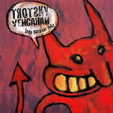
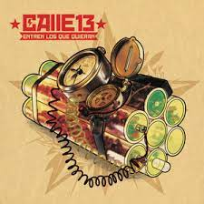
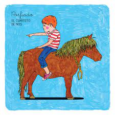

🏠
📜
🎵
👪
📷
💬
📞
Los gustos de Alejandro :3
Canción que no me saco de la cabeza:

Tu navegador no soporta audio HTML5.
192 Manga - Trotsky Vengarán
Canción que me recuerda a alguien especial:

Tu navegador no soporta audio HTML5.
Ojos color sol - Calle 13
Canción con la que me identifico:

Tu navegador no soporta audio HTML5.
Algo mejor que hacer - Cuarteto de Nos
Canción que me se de memoria:
Tu navegador no soporta audio HTML5.
El hijo de Hernandez - Cuarteto de Nos
Mi soundtrack:
Tu navegador no soporta audio HTML5.
Habla tu espejo - Cuarteto de Nos
Mi papá Gianluca:
Mi historia entre tus dedos - Gianluca Grignani
Mi cancion de señora:
Rosa pastel - Belanova